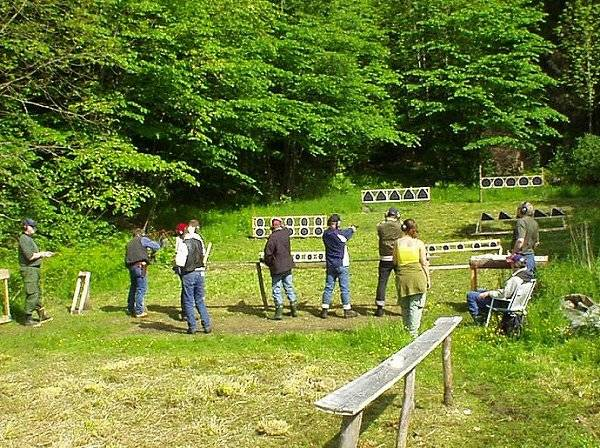
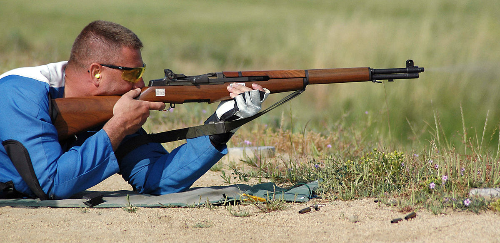

Saha çekimi
Field-Atış veya Arazi-Atış, sürekli atış poligonları yerine genellikle açık arazide değişen (ve bazen bilinmeyen) mesafelerdeki geçici atış poligonlarından yapılan bir dizi tabanca ve tüfek atış disiplini anlamına gelir. sabit mesafeler

Tabancalarla saha çekimi
- Nordic Tabanca Saha Atış yarışmaları, küçük çaplı .22 LR'den büyük çaplı .500 S&W Magnum'a kadar sınıflarla, ekipmana bağlı olarak farklı sınıflarda tabanca ve tabanca ile vurulur. Maçlar yıl boyunca çeşitli atış hedefleri ve mesafeleriyle açık havada yapılır ve Norveç Atıcılık Derneği (NSF), Danimarka Jimnastik ve Spor Dernekleri (DGI Atıcılık) ve İsveç Tabanca Atıcılık Derneği (SPSF) tarafından düzenlenir.
- Tabancalarla İsviçre arazi atışları , İsviçre Atıcılık Sporları Federasyonu'nun ortak bir İsviçre kuralları çerçevesinde düzenlenen bir disiplindir ve 1899'dan beri düzenlenen tüfeklerle atış şampiyonasının yanı sıra 1919'dan beri yıllık saha atış şampiyonasının bir parçasıdır.
Tüfeklerle saha çekimi

- Nordic Rifle Field-Atış, 100 metrede küçük çaplı .22 LR kartuş veya orta ( .223 Remington veya 6mm BR gibi) veya savaş tüfeği kartuşları ( 6.5×55mm , .308 Winchester gibi) ile vurulur. veya .30-06 Springfield ) 100 ila 650 metre mesafelerde. Nordic Bullseye Tüfek Atışı'nda 200 ve 300 metre normal atış mesafesi iken, Tüfek Saha Atışı'nda
300 metrenin çok ötesine yerleştirilen bu hedefler, yarışma formatının da uzun menzilli atış disiplini olarak sınıflandırılabileceği anlamına gelir. Maçlar genellikle kış mevsiminde çeşitli hedeflerle yapılır veNorveç Ulusal Tüfek Derneği (DFS), Danimarka Jimnastik ve Spor Dernekleri (DGI Atıcılık) ve İsveç Atıcılık Sporları Derneği (SvSF).
- Tüfeklerle İsviçre arazi atışları , İsviçre Atıcılık Sporları Federasyonu'nun ortak bir İsviçre kural seti altında düzenlenmiş bir disiplinidir . Her yıl düzenlenen İsviçre Atıcılık Şampiyonası 1899'dan beri düzenlenmektedir. 1919'dan itibaren, tabancalarla İsviçre saha atışları da İsviçre Saha Atıcılık Şampiyonası'nın bir parçası olmuştur.
- Precision Rifle Series (PRS) gibi hassas tüfek yarışmaları , orta veya savaş tüfeği fişeklerine sahip tüfeklerin arazide yaklaşık 10 ila 1000 metre arasında değişen mesafelerde vurulduğu bir saha ve uzun menzilli atış disiplinidir.
- Field Target , Birleşik Krallık menşeli, ancak dünya çapında popülerlik kazanan bir açık hava havalı silah disiplinidir. Avcı alan hedefi , alan hedefinin bir varyasyonudur .